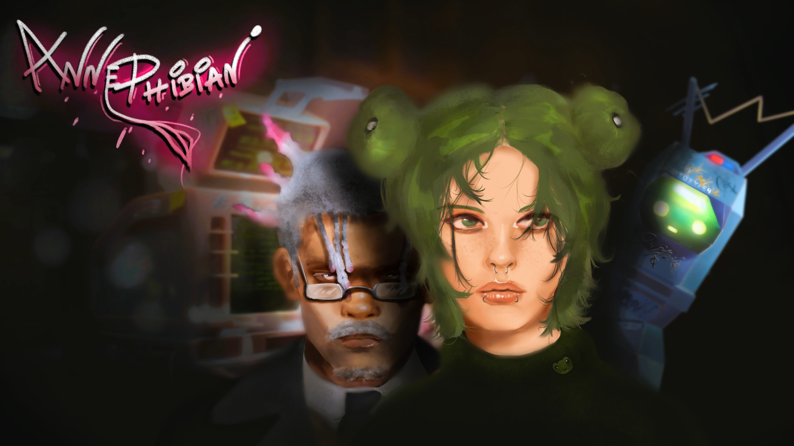

Ray Kimbler - Game Programmer - Systems, UI, Unity
Email: landfillheartdev@gmail.com
Experience
Era One
July 2023 - September 2024
Extended Game Systems
Using patterns such as Observer and ECS, I extended existing systems to add new functionality.
This includes Dynamic Music based on game events, a leveling system where units get EXP from combat, unique weapons with special functions such as EMPs, and gameplay objectives.
UI
I created UI elements that integrated with the camera system, providing a minimap which can be centered on friendly units, and a system that lets you create an "anchor" on game objects to quickly focus your camera on them through a button.
Updated the health bars to differentiate between the module's HP and its bonus HP.
Other UI elements listen to game events to show HUD warnings - such as resources flashing red on critical levels, and panels for info from missions and game events.
Projects
Mesh Editor
Efficiency: Material Property Block
Using Material Property Block to edit the color of the meshes prevents the creation of new Material objects, allowing the game to run smoothly even on your browser.
Total Customization
A component lets you create a list of categories (mag, sights, grips, etc.) and assign meshes. Selecting a category tells the model which meshes should be edited by the color picker, and updates the other UI elements to show other customization options (in this case, alternate meshes for sights, mag, and barrels).
Anne Phibian
Resolve the mysterious death of a journalist in this retro futuristic adventure
itch.io: https://landfillheart.itch.io/anne-phibiangithub: https://github.com/LandfillHeart/Anne-Phibian-Game-Off-2024
artist: https://www.instagram.com/froo.gss/
Anne Phibian is a short point-and-click game made for the Game Off 2024 game jam.
It features a simple point-and-click interaction system, interactive objects, puzzles, and a dialogue system.
Taekwondough
 Read more: https://medium.com/@raykimblerdev/how-i-made-my-first-game-in-two-weeks-51741f27c8d2
Read more: https://medium.com/@raykimblerdev/how-i-made-my-first-game-in-two-weeks-51741f27c8d2
Taekwondough is an iOS rhythm game where you make pizza with karate kicks.
This was my first game project. I made it with some academy peers in 2 weeks. I spent the first week learning music theory and making 3 tracks for the game. The next week I spent working on the mechanics,
such as timing the ingredients (or notes) to the tempo of the music, gaining points and multipliers, and a lifeline system.
Dyscrasia (WIP)